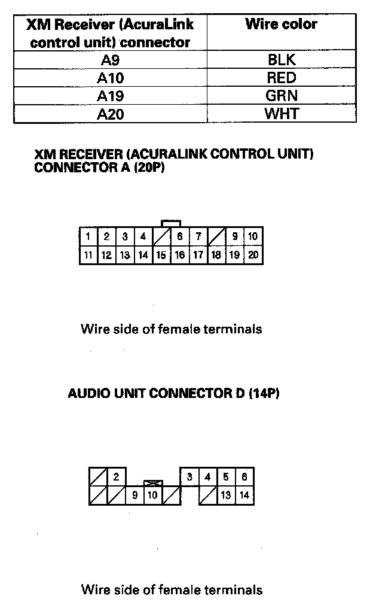

Poor or No Sound With XM Radio (Audio Unit Can Display XM Channels)
Poor or no sound with XM radio (Audio unit does display XM channels)NOTE:
- Check the XM radio reception in an open area. Poor reception/interference can be caused by nearby tall buildings, mountains, or high-voltage power lines.
- Always check the connectors for poor connections or loose terminals.
- If you can only tune to channel 000,001,174, and 247, make sure the audio unit is set to channel mode (see owners manual), if it is set to channel mode, call XM Satellite Radio customer support and check the account activation status.
- If you replace the XM receiver, the AcuraLink must be reactivated by Acura Client Services.
1. Turn the ignition switch to ACC (I).
2. Turn on the audio unit and select XM radio.
3. Check for an error message on the display.
Are there any messages displayed?
YES - Go to error code list.
NO
- With AcuraLink: Go to step 4.
- Without AcuraLink: Go to step 8.
4. Disconnect audio unit connector D (14P) and the XM receiver (AcuraLink control unit) connector A (20P).
5. Check for continuity between audio unit connector D (14P) and XM receiver (AcuraLink control unit) connector A (20P) according to the table.
Is there continuity?
YES - Go to Step 6.
NO - Repair open in the wire(s) between the audio unit and XM receiver (AcuraLink control unit) or replace the appropriate shielded harness.

6. Check for continuity to body ground between the terminals of XM receiver (AcuraLink control unit) connector A(20P) and body ground according to the table. Then check for continuity between the same terminals listed in the table and the audio unit connector D (14P) No. 4terminal (the harness shield).
Is there continuity?
YES - Replace the shielded wires between the audio unit and XM receiver (AcuraLink control unit).
NO - Go to Step 7.
7. Check for continuity between the terminals of XM receiver (AcuraLink control unit) connector A(20P) according to the cable.
Is there continuity between any of the terminals?
YES - Repair short in the wire(s) between the audio unit and XM receiver (AcuraLink control unit).
NO - Substitute a known-good audio unit and recheck. If the symptom/indicated goes away, replace the original audio unit. If the symptom is still present, substitute a known-good XM receiver (AcuraLink control unit) and recheck. If the symptom/indication goes away, replace the original XM receiver (AcuraLink control unit).
8. Check for continuity between audio unit connector D(14P) and XM receiver connector A (14P) according to the table.
Is there continuity?
YES - Go to Step 6.
NO - Repair open in the wire(s) between the audio unit and XM receiver.

9. Check for continuity between XM receiver connector A(14P) and body ground according to the table. Then check for continuity between the same terminals listed in the table and the audio unit connector D (14P) No. 4 terminal (the harness shield).
Is there continuity?
YES - Repair short to body ground in the wire(s) between the audio unit and XM receiver or a short between the shield wires (replace the applicable shielded harness).
NO - Go to Step 10.
10. Check for continuity between the terminals of XM receiver connector A(14P) according to the cable.
Is there continuity between any of the terminals?
YES - Repair short in the wire(s) between the audio unit and XM receiver.
NO - Substitute a known-good audio unit and recheck. If the symptom/indicated goes away, replace the original audio unit. If the symptom is still present, substitute a known-good XM receiver and recheck. If the symptom/indication goes away, replace the original XM receiver.